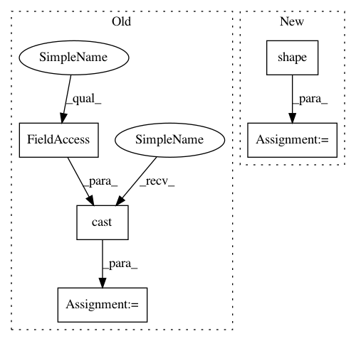

49d8d4708eff5db085b8a6d5ee7c08972019a1e0,tf_agents/agents/dqn/dqn_agent.py,DdqnAgent,_compute_next_q_values,#DdqnAgent#Any#,499
Before Change
// TODO(b/117175589): Add binary tests for DDQN.
next_q_values, _ = self._q_network(next_time_steps.observation,
next_time_steps.step_type)
best_next_actions = tf.cast(
tf.argmax(input=next_q_values, axis=-1), dtype=tf.int32)
next_target_q_values, _ = self._target_q_network(
next_time_steps.observation, next_time_steps.step_type)
multi_dim_actions = best_next_actions.shape.ndims > 1
return common.index_with_actions(
After Change
next_target_q_values, _ = self._target_q_network(
next_time_steps.observation, next_time_steps.step_type)
batch_size = (
next_target_q_values.shape[0] or tf.shape(next_target_q_values)[0])
dummy_state = self._greedy_policy.get_initial_state(batch_size)
// Find the greedy actions using our greedy policy. This ensures that masked
// actions (and other logic) are respected.
best_next_actions = self._greedy_policy.action(
next_time_steps, dummy_state).action
In pattern: SUPERPATTERN
Frequency: 3
Non-data size: 5
Instances
Project Name: tensorflow/agents
Commit Name: 49d8d4708eff5db085b8a6d5ee7c08972019a1e0
Time: 2019-08-16
Author: wun@google.com
File Name: tf_agents/agents/dqn/dqn_agent.py
Class Name: DdqnAgent
Method Name: _compute_next_q_values
Project Name: NifTK/NiftyNet
Commit Name: 377989c11903f69f042fee717ce6be66bd6eb43a
Time: 2018-04-05
Author: z.eaton-rosen@ucl.ac.uk
File Name: niftynet/layer/loss_segmentation.py
Class Name:
Method Name: generalised_wasserstein_dice_loss
Project Name: tensorflow/agents
Commit Name: 49d8d4708eff5db085b8a6d5ee7c08972019a1e0
Time: 2019-08-16
Author: wun@google.com
File Name: tf_agents/agents/dqn/dqn_agent.py
Class Name: DdqnAgent
Method Name: _compute_next_q_values
Project Name: tensorflow/models
Commit Name: cae2622bdb0b990091c6e4cb1b0d91858368b619
Time: 2020-10-22
Author: anirudh.vegesana@gmail.com
File Name: official/vision/beta/dataloaders/classification_input.py
Class Name: Parser
Method Name: _parse_train_data